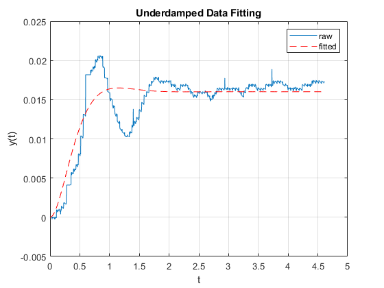

Contents
Lab 2 Prep
Johannes Schmid & Liam Nolan
% Workspace Init close all clear all clc
Underdamped Fitting
This section loads our step response lab data and fits and underdamped curve to this data, control parameters can then be calculated from this
% Data load and manipulation load("attempt5.mat") t_under = sensor_v.Time(15574:end)-sensor_v.Time(15574); y_under = (sensor_v.Data(15574:end)-sensor_v.Data(15574))*.025; % function handle UD_function = @(params, t) params(3).*(1- (exp(-params(1)*params(2)*t) .*( cos((params(2) .*sqrt(1-params(1)^2))*t) + (params(1)/sqrt(1-params(1)^2)) .*sin((params(2).*sqrt(1-params(1)^2))*t)))); % Init Parameters UD_init=[0.25,3.5,20]; % perform curve fitting coeff_UD = lsqcurvefit(UD_function,UD_init,t_under,y_under, [], []); % fit model y_UD=UD_function(coeff_UD,t_under); % plot plot(t_under,y_under) hold on; plot(t_under,y_UD,'r--') xlabel('t'); ylabel('y(t)'); title('Underdamped Data Fitting') legend('raw','fitted') grid on;
Local minimum possible. lsqcurvefit stopped because the final change in the sum of squares relative to its initial value is less than the value of the function tolerance.
Controller Design
% Pull Calculated Parameters zeta = coeff_UD(1); w_n = coeff_UD(2); K = coeff_UD(3); % State space matrices A = [0 1; -w_n^2 -2*zeta*w_n]; B = [0; 1]; C = [1, 0]; D = 0; % Settling Time t_s = 4/(zeta*w_n); % Pole Placement s1 = complex(-15, 3); s2 = complex(-15, -3); poles = [s1, s2]; % Gain calculation K = acker(A,B,poles); % Prefilter Calc V=-1/(C*inv(A-B*K)*B); % Observor Poles Pl=0.2*poles; L=acker(A',C',Pl)'; % Init X x_init = [0 0];
Simulink Models
% Linearized System % Observer
System Response
Step Response
% <<StepResponseScreenshot.png>> % Sin Wave Response % Random Signal Response